Features
Everything Aira does today, one feature at a time. The recordings and screenshots are the real app, running demo projects.
Projects and spaces
Every repo is a project. Every folder you work in is a space.
- A colour and an icon for each project.
- Spaces: the root, a nested package, a worktree.
- Each space keeps its own tabs, files and Git view.
- Star a space to pin it to the Spaces tab.
- Sleep a space to stop its terminals and agents.
- Removing one never touches files on disk.

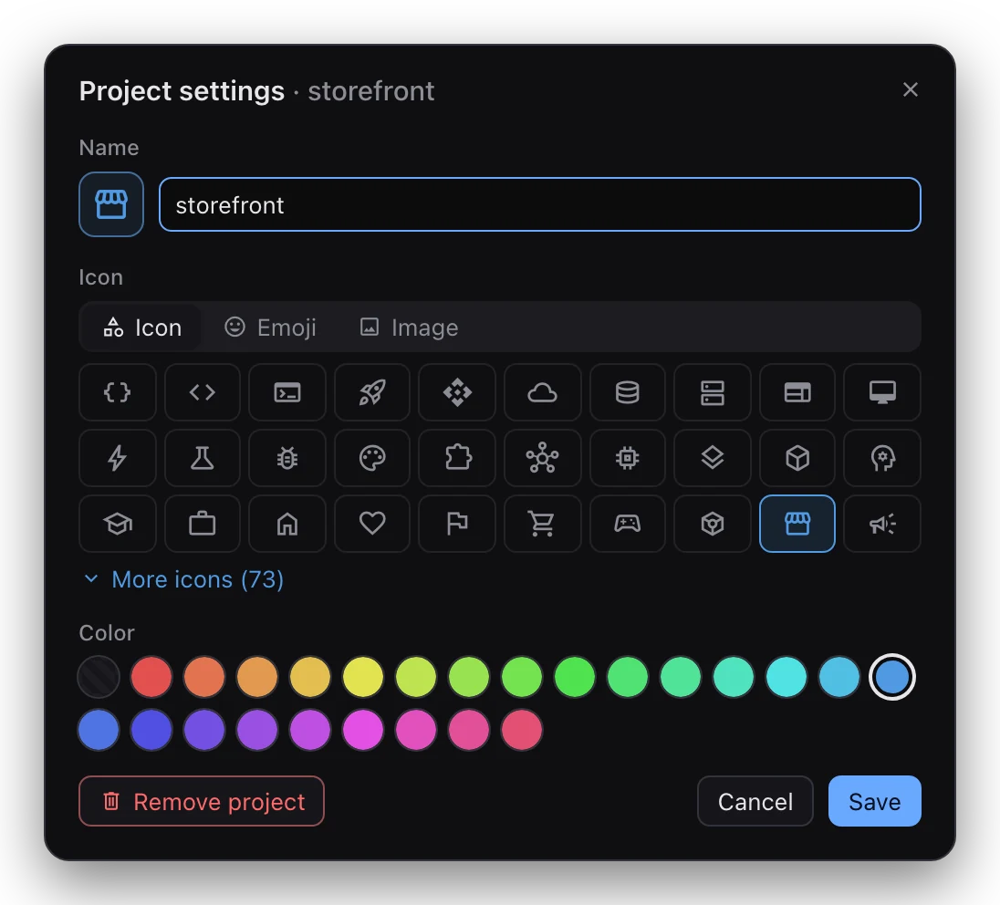
Coding agents
Start any agent CLI from the + in the tab bar.
- Twelve agents built in, plus any custom command.
- Only installed agents show; hide any in Settings.
- Every space card shows Working, Needs input or Done.
- Claude Code's subagents nest as they start.
- A notification when an agent finishes or needs you.
- Exact status for eight agents, terminal activity for the rest. How each is tracked


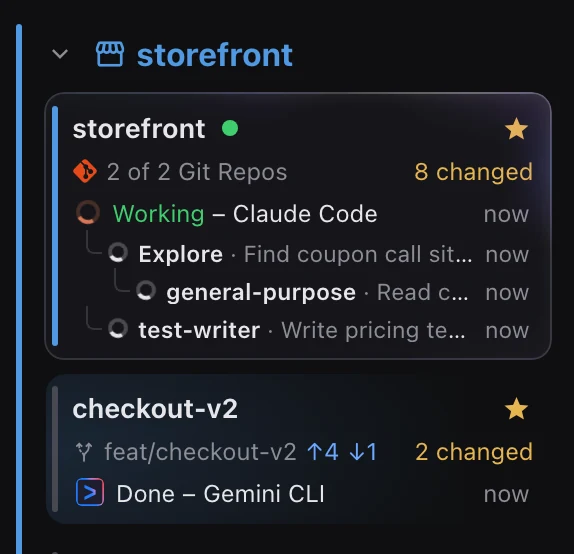
Scripts
Your whole stack, one click.
- Twelve runners, from bun to make, or any command.
- Scripts found in
package.jsonand theMakefile. - Pin scripts; Start runs them together.
- Each gets a tab in the project's scripts window.
- Failures turn red and keep their log.


Git
One changes tree for every repo in the project.
- Diff any file against HEAD.
- Commits go to one repository at a time.
- Generate drafts the message. Pick the provider
- Amend, commit and push, pull, fetch all.
- Branches, worktrees and rollback, all built in.
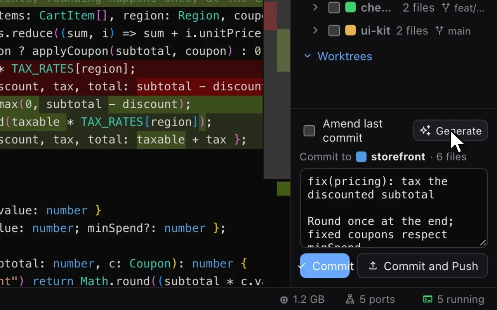
Ports and memory
See what's on a port, and free it.
- Ports grouped by project.
- A port blocking a script gets flagged.
- Search any port number.
- Scripts stop on the spot; other processes ask first.
- Memory for every terminal, every two seconds.

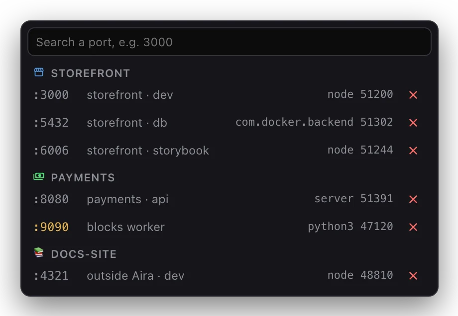
Terminals
Your login shell, in the space you're in.
- ⌘T for a new one, or Open Terminal Here on any folder.
- Double-click a tab to rename it. ⌘K clears.
- Every running terminal and its memory, in the status bar.
- Optional GPU rendering for heavy output.
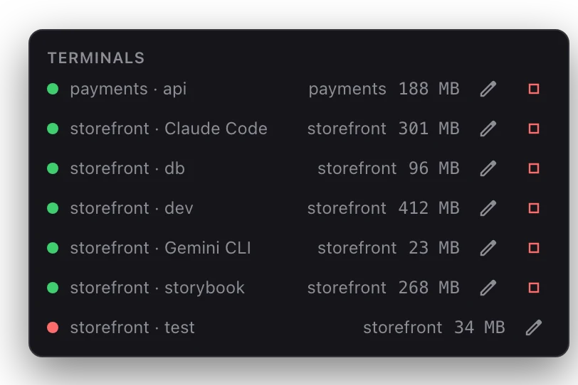
Editor and themes
Light on purpose: Monaco, no language servers.
- Click to preview, double-click to keep. ⌘S saves.
- New file, new folder, Reveal in Finder, Copy Path.
- Dark, Light, or follow macOS.
- Any installed font, sizes 9 to 28.
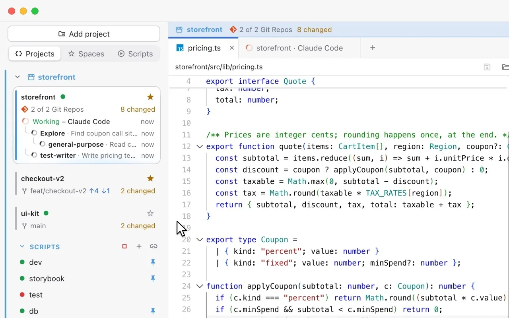
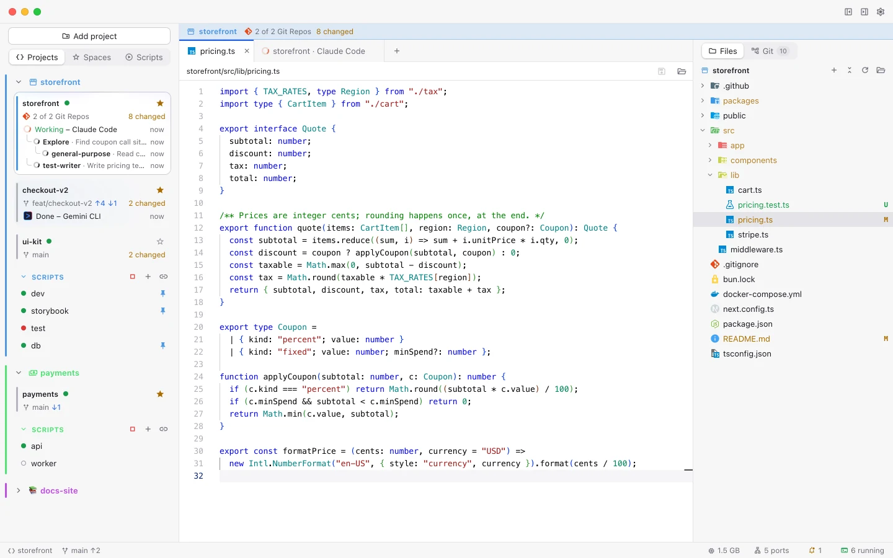
AI commit messages
Bring your own model. Nothing is sent until you press Generate.
- Cloud: Anthropic, OpenAI, Gemini, OpenRouter, Groq, Mistral, DeepSeek, xAI.
- Local: Ollama, LM Studio, any OpenAI-compatible server.
- Agent CLIs: Claude Code, Codex, Gemini CLI, OpenCode, on your own login.
- Keys stay in the macOS Keychain.
- Some providers ask once before the first send. How each was reviewed
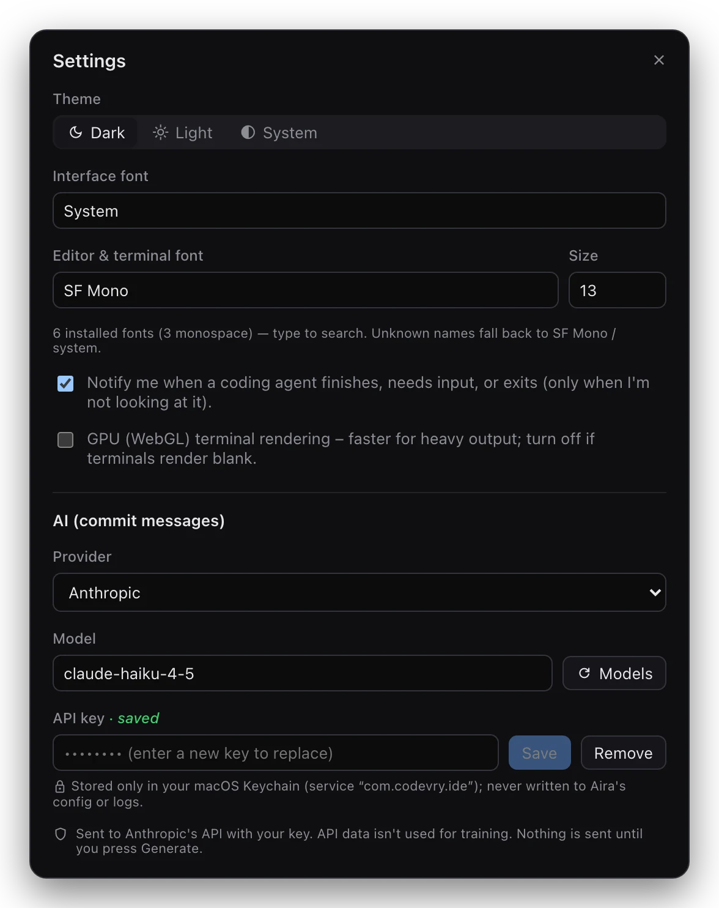
Browser
Your dev servers and any site, in a tab.
- Running servers, pins and recent pages on every new tab.
- Phones, tablets and laptops side by side, at real widths.
- Sync scrolls and navigates them together.
- Capture an element, a region or the whole page.
- Send a capture straight to your agent.
- Pop a page out into its own window.
- Sign in with cookies from Chrome, Arc and more.
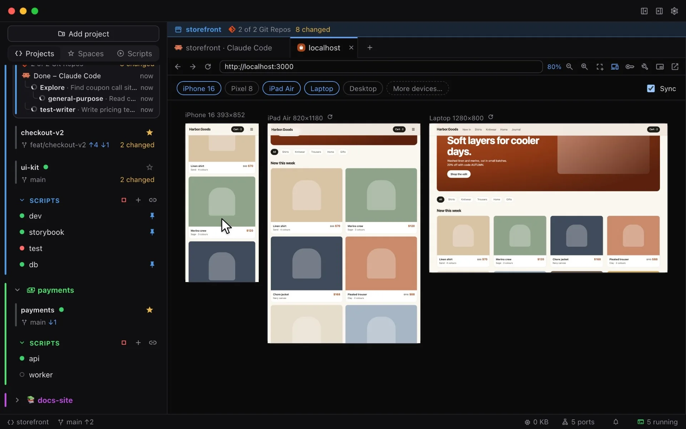
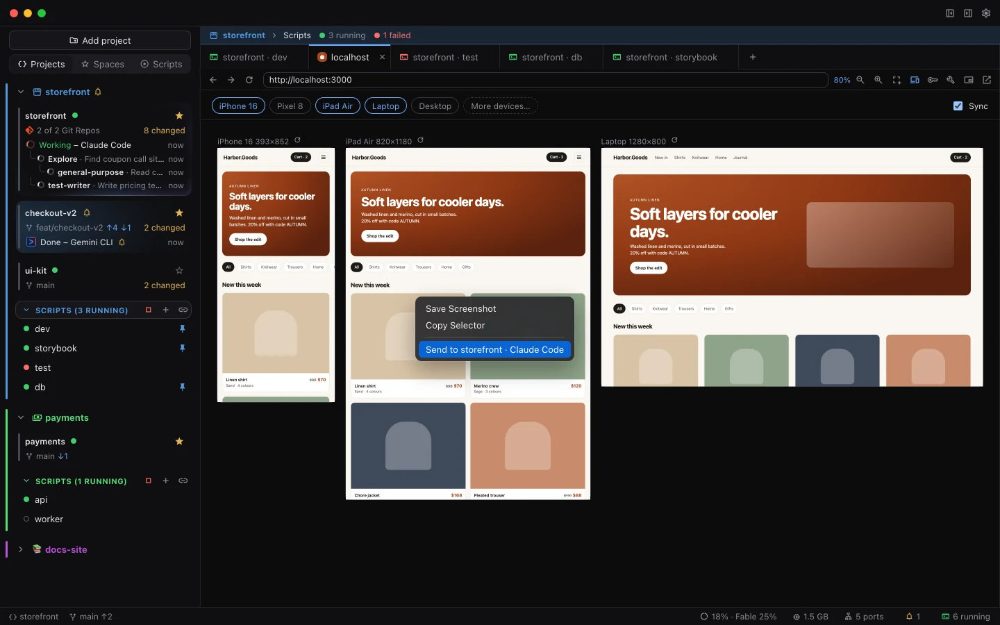
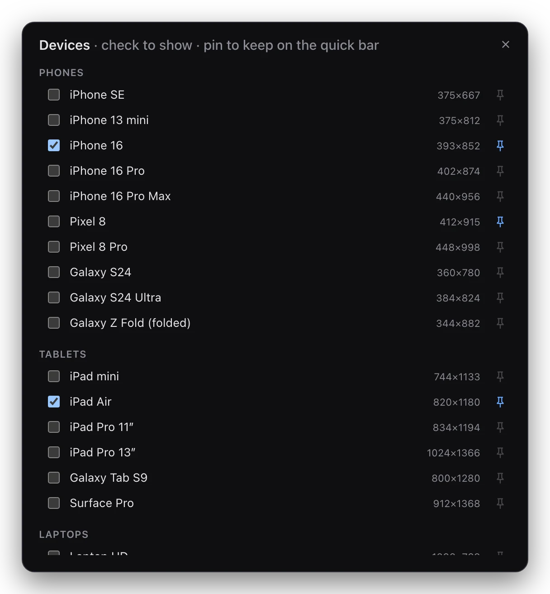
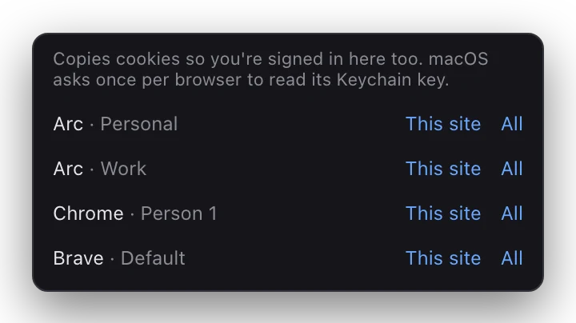